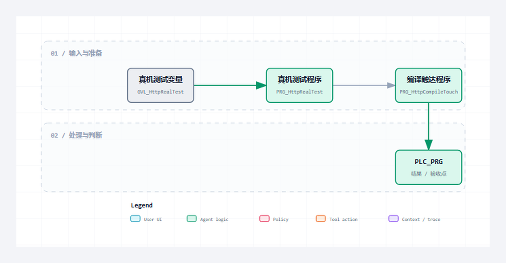

最后一组源码把公共内核、Server、Client、离线测试和真机测试装配到周期任务中，形成可复现工程入口。
适合谁收藏
- 准备复用本组源码并审查对象边界的工程师。
- 需要把公开代码装配进目标 CodeSys 工程的人。
- 准备重新完成编译、离线测试和真机验证的读者。
本篇完整公开 4 个 ST 文件。代码直接读取已验证工程，保留声明、实现、注释和缩进；没有伪代码，没有跨文件拼接，也没有省略号。
先给结论
最后一组源码把公共内核、Server、Client、离线测试和真机测试装配到周期任务中，形成可复现工程入口。 本篇的通过标准不是“代码已经贴出”，而是每个文件的职责、调用位置、状态边界和验证入口都能对应起来，并且完整代码可逐字回查源文件。

读图重点
先找到 GVL_HttpRealTest 在本组中的位置，再沿图确认其余对象分别承担数据、状态、执行或诊断职责。图只给阅读顺序，最终判断必须回到下面的完整 ST 代码。
先看文件职责
| 序号 | 文件 | 职责 | 行数 |
|---|---|---|---|
| 1 | GVL_HttpRealTest.st | 真机测试参数与观察量 | 87 |
| 2 | PRG_HttpRealTest.st | 真机测试执行程序 | 16 |
| 3 | PRG_HttpCompileTouch.st | 编译触达入口 | 16 |
| 4 | PLC_PRG.st | PLC 周期装配入口 | 154 |
阅读顺序不是按文件名机械展开。先看数据和状态，再看公开方法，最后顺着错误出口和调用对象检查边界。源码篇的目标是让读者能对照工程复现，不是用大段代码制造篇幅。
从协议约束到代码职责
协议约束
最后一组源码把公共内核、Server、Client、离线测试和真机测试装配到周期任务中，形成可复现工程入口。 协议层只定义消息与状态成立的条件，工程层还必须把条件分配给确定对象，避免 Parser、Builder、Server、Client 和测试入口互相越权。
对象分工
- 第 1 个对象
GVL_HttpRealTest.st：承担“真机测试参数与观察量”。阅读时先确认输入与公开输出，再追状态、长度和错误出口，最后核对它被谁周期调用或被哪个对象消费。 - 第 2 个对象
PRG_HttpRealTest.st：承担“真机测试执行程序”。阅读时先确认输入与公开输出，再追状态、长度和错误出口，最后核对它被谁周期调用或被哪个对象消费。 - 第 3 个对象
PRG_HttpCompileTouch.st：承担“编译触达入口”。阅读时先确认输入与公开输出，再追状态、长度和错误出口，最后核对它被谁周期调用或被哪个对象消费。 - 第 4 个对象
PLC_PRG.st：承担“PLC 周期装配入口”。阅读时先确认输入与公开输出，再追状态、长度和错误出口，最后核对它被谁周期调用或被哪个对象消费。
装配与验证
这组文件必须作为一个职责单元阅读和编译。先用确定输入验证“真机参数集中管理”，再制造非法或容量边界验证“编译触达防止对象未被工程引用”，最后在真实通信或上层调用中确认“PLC_PRG 是运行装配点而不是业务大杂烩”。如果单文件测试通过但装配后失败，应优先检查结构体、常量、状态枚举和周期调用关系，而不是立即重写核心算法。源码完整公开只证明读者拿到了同一事实源，目标运行时是否通过仍需重新编译和真机取证。
本篇从 GVL_HttpRealTest.st 开始审查：先确认“真机参数集中管理”对应的类型、常量或公开输入，再沿 CASE 或方法调用追踪成功路径，随后逐个检查容量、超时和协议错误出口，最后在 PLC_PRG.st 对应的结果或装配位置确认错误能被观测、清理并再次执行。这个顺序专门用来区分“算法正确但没有周期调用”“状态能完成但错误被覆盖”和“PLC_PRG 是运行装配点而不是业务大杂烩尚未形成验证证据”三类问题。只有本篇源码、装配和验证使用同一组对象与同一组边界，完整开源才具有可复现意义。
本篇完整开源代码
下面按职责顺序给出本篇全部 ST 文件。每个代码块保留完整声明与实现；阅读时把状态、长度、错误出口和调用对象与上面的职责表逐项对照。
完整源码 1：GVL_HttpRealTest.st
职责：真机测试参数与观察量
/// 功能 : HTTP 真机联调控制和结果变量。
/// 库依赖 : CAA Net Base Services
{attribute 'qualified_only'}
VAR_GLOBAL
bResetResults : BOOL := FALSE; // 一次性复位真机联调结果和命令位。
udiNowMs : UDINT := 0; // 示例任务毫秒时钟，按扫描周期累加。
bServerEnable : BOOL := TRUE; // Server 使能，下载后默认监听，便于通信猫直接访问 PLC。
bServerCloseConnection : BOOL := TRUE; // Server 响应后主动关闭连接，匹配通信猫短连接调试习惯。
sServerBindIP : STRING := '0.0.0.0'; // Server 绑定 IP，0.0.0.0 表示任意网卡。
uiServerPort : UINT := GVL_Http.cnDefaultServerPort; // Server 监听端口，默认 18088，匹配通信猫访问 PLC 的 URL。
uiServerResponseStatusCode : UINT := 200; // Server 自定义响应状态码，内置路由默认 200。
sServerResponseBody : STRING(GVL_Http.cnMaxBodySize) := 'hello from PLC Server';// Server 自定义响应 body，非空时未知路径也返回 200。
sServerResponseContentType : STRING(96) := GVL_Http.cnDefaultContentType; // Server 自定义响应 Content-Type。
sServerAdditionalHeader : STRING(GVL_Http.cnMaxHeaderSize) := ''; // Server 自定义响应 Header 行。
bServerListening : BOOL := FALSE; // Server 已获得监听句柄。
bServerRunning : BOOL := FALSE; // Server 正在运行。
bServerBusy : BOOL := FALSE; // Server 正在初始化或等待监听。
bServerError : BOOL := FALSE; // Server 错误锁存。
diServerErrorID : DINT := 0; // Server 错误诊断码。
sServerDiagMsg : STRING(255) := ''; // Server 诊断文本。
eServerState : E_HttpServerState := E_HttpServerState.iDisabled; // Server 状态机。
eServerLastError : E_HttpError := E_HttpError.iNoError; // Server 最近 HTTP 错误。
eServerLastNbsError : NBS.ERROR; // Server 最近 NBS 错误。
uiServerActiveConnections : UINT := 0; // Server 当前活跃连接数。
uiServerLastRequestSlot : UINT := 0; // Server 最近请求槽位。
uiServerLastErrorSlot : UINT := 0; // Server 最近错误槽位。
sServerLastTarget : STRING(GVL_Http.cnMaxTargetLen) := ''; // Server 最近请求路径。
sServerLastBody : STRING(GVL_Http.cnMaxBodySize) := ''; // Server 最近请求 body。
sServerRxMessage : STRING(GVL_Http.cnMaxMessageSize) := ''; // Server 最近一次接收报文。
sServerTxMessage : STRING(GVL_Http.cnMaxMessageSize) := ''; // Server 最近一次发送报文。
udiServerAcceptedCount : UDINT := 0; // Server 累计接入连接数。
udiServerRequestCount : UDINT := 0; // Server 累计请求数。
udiServerResponseCount : UDINT := 0; // Server 累计响应数。
udiServerProtocolErrorCount : UDINT := 0; // Server 累计协议错误数。
hServerListenHandle : NBS.CAA.HANDLE; // Server 监听句柄快照。
bServerPassLatched : BOOL := FALSE; // Server 外部 client 联调通过锁存。
bClientEnable : BOOL := TRUE; // Client 使能，下载后可直接向通信猫发起 HTTP 请求。
bClientSend : BOOL := TRUE; // Client 下载后默认发送一次，PLC_PRG 读取后自复位。
bClientAbort : BOOL := FALSE; // Client 中止当前连接命令。
bClientCloseConnection : BOOL := TRUE; // Client 每次响应后主动关闭连接，优先保证通信猫短连接调试稳定。
udiClientTimeoutUs : UDINT := 10000000; // Client 请求超时，单位 [us]，通信猫联调默认 10 s。
sClientURL : STRING(1024) := ''; // Client URL 留空时使用下方 IP/Host/Path 分离引脚。
sClientServerIP : STRING := '192.168.20.2'; // Client 远端 HTTP Server IP。
uiClientPort : UINT := 6971; // Client 远端 HTTP Server 端口，匹配通信猫 HTTP 服务端口。
sClientHost : STRING(GVL_Http.cnMaxHostLen) := '192.168.20.2:6971'; // Client Host 字段，匹配通信猫监听端口。
sClientPath : STRING(GVL_Http.cnMaxTargetLen) := '/api/tongxinmao'; // Client 请求路径，匹配通信猫 URL。
eClientMethod : E_HttpMethod := E_HttpMethod.iPost; // Client 请求方法，默认 POST 便于发送正文。
sClientBody : STRING(GVL_Http.cnMaxBodySize) := 'hello from PLC'; // Client 请求 body，通信猫接收区可直接看到。
sClientContentType : STRING(96) := 'text/plain'; // Client Content-Type，匹配通信猫普通文本联调。
sClientAdditionalHeader : STRING(GVL_Http.cnMaxHeaderSize) := ''; // Client 自定义 Header 行。
bClientTcpConnected : BOOL := FALSE; // Client TCP 连接快照。
bClientBusy : BOOL := FALSE; // Client 正在执行事务。
bClientDone : BOOL := FALSE; // Client 本次事务完成。
bClientError : BOOL := FALSE; // Client 错误锁存。
diClientErrorID : DINT := 0; // Client 错误诊断码。
sClientDiagMsg : STRING(255) := ''; // Client 诊断文本。
eClientState : E_HttpClientState := E_HttpClientState.iDisabled; // Client 状态机。
eClientLastError : E_HttpError := E_HttpError.iNoError; // Client 最近 HTTP 错误。
eClientLastNbsError : NBS.ERROR; // Client 最近 NBS 错误。
uiClientStatusCode : UINT := 0; // Client 最近 HTTP 响应状态码。
sClientReason : STRING(64) := ''; // Client 最近 HTTP 响应原因短语。
sClientResponseBody : STRING(GVL_Http.cnMaxBodySize) := ''; // Client 最近 HTTP 响应 body。
sClientResponseHeader : STRING(GVL_Http.cnMaxHeaderSize) := ''; // Client 最近 HTTP 响应 Header。
sClientTxMessage : STRING(GVL_Http.cnMaxMessageSize) := ''; // Client 最近一次发送报文。
sClientRxMessage : STRING(GVL_Http.cnMaxMessageSize) := ''; // Client 最近一次接收报文。
udiClientRequestCount : UDINT := 0; // Client 累计请求数。
udiClientResponseCount : UDINT := 0; // Client 累计响应数。
udiClientConnectErrorCount : UDINT := 0; // Client 累计连接错误数。
udiClientProtocolErrorCount : UDINT := 0; // Client 累计协议错误数。
bClientPassLatched : BOOL := FALSE; // Client 外部 server 联调通过锁存。
bOverallPassLatched : BOOL := FALSE; // Server 与 Client 双向联调均通过锁存。
bClientMatrixAutoEnable : BOOL := FALSE; // 真机矩阵自动运行开关，发布默认关闭，避免下载后自动访问外部网络。
bClientMatrixRun : BOOL := FALSE; // 真机矩阵运行命令，由自动开关或在线命令置位。
bClientMatrixDone : BOOL := FALSE; // 真机矩阵完成标志。
bClientMatrixPassed : BOOL := FALSE; // 真机矩阵全部通过标志。
bClientMatrixError : BOOL := FALSE; // 真机矩阵存在失败用例标志。
uiClientMatrixTotal : UINT := 15; // 真机矩阵用例总数。
uiClientMatrixPassed : UINT := 0; // 真机矩阵通过用例数。
uiClientMatrixFailed : UINT := 0; // 真机矩阵失败用例数。
uiClientMatrixCase : UINT := 0; // 真机矩阵当前用例序号。
uiClientMatrixStep : UINT := 0; // 真机矩阵内部步骤快照。
uiClientMatrixLastStatus : UINT := 0; // 最近一次 Client 响应状态码。
eClientMatrixLastError : E_HttpError := E_HttpError.iNoError; // 最近一次 Client 协议栈错误码。
sClientMatrixCaseID : STRING(48) := ''; // 当前真机矩阵用例 ID。
sClientMatrixFailedCase : STRING(48) := ''; // 首个失败用例 ID。
sClientMatrixDiagMsg : STRING(255) := ''; // 真机矩阵诊断文本。
END_VAR完整源码 2：PRG_HttpRealTest.st
职责：真机测试执行程序
/// 功能 : HTTP 真机联调旧入口兼容占位。
/// 库依赖 : CAA Net Base Services
PROGRAM PRG_HttpRealTest
VAR
END_VAR
// === IMPLEMENTATION ===
/// =======================================================================
/// 名称 : PRG_HttpRealTest
/// 功能 : 保留旧工程树对象名称，真实 Server/Client 联调入口已统一到 PLC_PRG。
/// 库依赖 : CAA Net Base Services
/// =======================================================================
/// 使用说明 : 1. 本程序不再实例化 HTTP 功能块，不再处理发送、复位或中止命令。
/// : 2. 在线联调请直接打开 PLC_PRG，操作 GVL_HttpRealTest 中的全局变量。
/// =======================================================================
// 兼容原因：当前工具链删除 IEC 对象能力受限，保留空 PRG 可避免旧入口继续干扰在线联调。完整源码 3：PRG_HttpCompileTouch.st
职责：编译触达入口
/// 功能 : HTTP 编译触达旧入口兼容占位。
/// 库依赖 : CAA Net Base Services
PROGRAM PRG_HttpCompileTouch
VAR
END_VAR
// === IMPLEMENTATION ===
/// =======================================================================
/// 名称 : PRG_HttpCompileTouch
/// 功能 : 保留旧工程树对象名称，当前 HTTP 对象由 PLC_PRG 中的完整功能块调用覆盖。
/// 库依赖 : CAA Net Base Services
/// =======================================================================
/// 使用说明 : 1. 本程序不再实例化 Client、Server 或连接槽位功能块。
/// : 2. 编译与联调以 PLC_PRG 为唯一用户入口。
/// =======================================================================
// 兼容原因：当前工具链删除 IEC 对象能力受限，空 PRG 仅用于保持工程树兼容。完整源码 4：PLC_PRG.st
职责：PLC 周期装配入口
/// 功能 : HTTP 示例工程任务入口。
/// 库依赖 : CAA Net Base Services
PROGRAM PLC_PRG
VAR
fbHttpClient : FB_HttpClient; // HTTP Client 主实例。
fbHttpServer : FB_HttpServer; // HTTP Server 主实例。
stClientMetrics : ST_HttpClientMetrics; // Client 指标输出。
stServerMetrics : ST_HttpServerMetrics; // Server 指标输出。
stClientResponse : ST_HttpResponse; // Client 响应输出。
aServerSnapshots : ARRAY[1..GVL_Http.cnMaxClientSlots] OF ST_HttpConnectionSnapshot; // Server 连接快照。
END_VAR
// === IMPLEMENTATION ===
/// =======================================================================
/// 名称 : PLC_PRG
/// 功能 : HTTP 示例工程主任务，直接完整调用 Client 和 Server 功能块。
/// 库依赖 : CAA Net Base Services
/// =======================================================================
/// 使用说明 : 1. Client/Server 所有真实网络命令默认关闭，由 GVL_HttpRealTest 在线变量触发。
/// : 2. 本主程序完整列出功能块引脚，便于使用 CODESYS 兼容 IDE 的工程师按引脚理解用法。
/// =======================================================================
// 工程说明：本段集中处理状态、边界或诊断，避免跨周期残留。
// 约束：PLC_PRG 作为示例主入口直接调用 HTTP 功能块；用户联调不再依赖辅助 PRG。
GVL_HttpRealTest.udiNowMs := GVL_HttpRealTest.udiNowMs + 10;
IF GVL_HttpRealTest.bResetResults THEN
fbHttpServer.M_Reset();
fbHttpClient.M_Reset();
GVL_HttpRealTest.bClientSend := FALSE;
GVL_HttpRealTest.bClientAbort := FALSE;
GVL_HttpRealTest.bServerPassLatched := FALSE;
GVL_HttpRealTest.bClientPassLatched := FALSE;
GVL_HttpRealTest.bOverallPassLatched := FALSE;
END_IF
fbHttpServer(
xEnable := GVL_HttpRealTest.bServerEnable,
xReset := GVL_HttpRealTest.bResetResults,
xCloseConnection := GVL_HttpRealTest.bServerCloseConnection,
bEnable := GVL_HttpRealTest.bServerEnable,
sBindIP := GVL_HttpRealTest.sServerBindIP,
uiPort := GVL_HttpRealTest.uiServerPort,
uiResponseStatusCode := GVL_HttpRealTest.uiServerResponseStatusCode,
sResponseBody := GVL_HttpRealTest.sServerResponseBody,
sResponseContentType := GVL_HttpRealTest.sServerResponseContentType,
sAdditionalHeader := GVL_HttpRealTest.sServerAdditionalHeader,
udiNowMs := GVL_HttpRealTest.udiNowMs,
xListening => GVL_HttpRealTest.bServerListening,
xRunning => GVL_HttpRealTest.bServerRunning,
xBusy => GVL_HttpRealTest.bServerBusy,
xError => GVL_HttpRealTest.bServerError,
bListening => GVL_HttpRealTest.bServerListening,
bRunning => GVL_HttpRealTest.bServerRunning,
bBusy => GVL_HttpRealTest.bServerBusy,
bError => GVL_HttpRealTest.bServerError,
diErrorID => GVL_HttpRealTest.diServerErrorID,
sDiagMsg => GVL_HttpRealTest.sServerDiagMsg,
eLastNbsError => GVL_HttpRealTest.eServerLastNbsError,
eState => GVL_HttpRealTest.eServerState,
eLastError => GVL_HttpRealTest.eServerLastError,
stMetrics => stServerMetrics,
uiActiveConnections => GVL_HttpRealTest.uiServerActiveConnections,
uiLastErrorSlot => GVL_HttpRealTest.uiServerLastErrorSlot,
uiLastRequestSlot => GVL_HttpRealTest.uiServerLastRequestSlot,
sRequestTarget => GVL_HttpRealTest.sServerLastTarget,
sRequestBody => GVL_HttpRealTest.sServerLastBody,
sRxMessage => GVL_HttpRealTest.sServerRxMessage,
sTxMessage => GVL_HttpRealTest.sServerTxMessage,
sLastTarget => GVL_HttpRealTest.sServerLastTarget,
sLastBody => GVL_HttpRealTest.sServerLastBody,
hListenHandle => GVL_HttpRealTest.hServerListenHandle,
aConnectionSnapshots => aServerSnapshots
);
fbHttpClient(
xEnable := GVL_HttpRealTest.bClientEnable,
xExecute := GVL_HttpRealTest.bClientSend,
xReset := GVL_HttpRealTest.bResetResults,
xAbort := GVL_HttpRealTest.bClientAbort,
xCloseConnection := GVL_HttpRealTest.bClientCloseConnection,
bEnable := GVL_HttpRealTest.bClientEnable,
bSend := GVL_HttpRealTest.bClientSend,
udiTimeOut := GVL_HttpRealTest.udiClientTimeoutUs,
sURL := GVL_HttpRealTest.sClientURL,
sServerIP := GVL_HttpRealTest.sClientServerIP,
uiPort := GVL_HttpRealTest.uiClientPort,
sHost := GVL_HttpRealTest.sClientHost,
sPath := GVL_HttpRealTest.sClientPath,
eRequestType := GVL_HttpRealTest.eClientMethod,
eMethod := GVL_HttpRealTest.eClientMethod,
sBody := GVL_HttpRealTest.sClientBody,
sContentType := GVL_HttpRealTest.sClientContentType,
sAdditionalHeader := GVL_HttpRealTest.sClientAdditionalHeader,
udiNowMs := GVL_HttpRealTest.udiNowMs,
xActive => GVL_HttpRealTest.bClientTcpConnected,
xConnected => GVL_HttpRealTest.bClientTcpConnected,
xBusy => GVL_HttpRealTest.bClientBusy,
xDone => GVL_HttpRealTest.bClientDone,
xError => GVL_HttpRealTest.bClientError,
bTcpConnected => GVL_HttpRealTest.bClientTcpConnected,
bBusy => GVL_HttpRealTest.bClientBusy,
bDone => GVL_HttpRealTest.bClientDone,
bError => GVL_HttpRealTest.bClientError,
diErrorID => GVL_HttpRealTest.diClientErrorID,
sDiagMsg => GVL_HttpRealTest.sClientDiagMsg,
eLastNbsError => GVL_HttpRealTest.eClientLastNbsError,
eState => GVL_HttpRealTest.eClientState,
eLastError => GVL_HttpRealTest.eClientLastError,
uiStatusCode => GVL_HttpRealTest.uiClientStatusCode,
sTxMessage => GVL_HttpRealTest.sClientTxMessage,
sRxMessage => GVL_HttpRealTest.sClientRxMessage,
sResponseBody => GVL_HttpRealTest.sClientResponseBody,
sResponseHeader => GVL_HttpRealTest.sClientResponseHeader,
stMetrics => stClientMetrics,
stResponse => stClientResponse
);
IF GVL_HttpRealTest.bClientSend THEN
GVL_HttpRealTest.bClientSend := FALSE;
END_IF
IF GVL_HttpRealTest.bClientAbort THEN
GVL_HttpRealTest.bClientAbort := FALSE;
END_IF
IF GVL_HttpRealTest.bResetResults THEN
GVL_HttpRealTest.bResetResults := FALSE;
END_IF
GVL_HttpRealTest.udiServerAcceptedCount := stServerMetrics.udiAcceptedConnections;
GVL_HttpRealTest.udiServerRequestCount := stServerMetrics.udiRequestCount;
GVL_HttpRealTest.udiServerResponseCount := stServerMetrics.udiResponseCount;
GVL_HttpRealTest.udiServerProtocolErrorCount := stServerMetrics.udiProtocolErrorCount;
GVL_HttpRealTest.udiClientRequestCount := stClientMetrics.udiRequestCount;
GVL_HttpRealTest.udiClientResponseCount := stClientMetrics.udiResponseCount;
GVL_HttpRealTest.udiClientConnectErrorCount := stClientMetrics.udiConnectErrorCount;
GVL_HttpRealTest.udiClientProtocolErrorCount := stClientMetrics.udiProtocolErrorCount;
GVL_HttpRealTest.sClientReason := stClientResponse.sReason;
IF (GVL_HttpRealTest.udiServerRequestCount > 0)
AND (GVL_HttpRealTest.udiServerResponseCount > 0)
AND NOT GVL_HttpRealTest.bServerError THEN
GVL_HttpRealTest.bServerPassLatched := TRUE;
END_IF
IF GVL_HttpRealTest.bClientDone
AND NOT GVL_HttpRealTest.bClientError
AND (GVL_HttpRealTest.uiClientStatusCode >= 200)
AND (GVL_HttpRealTest.uiClientStatusCode < 300) THEN
GVL_HttpRealTest.bClientPassLatched := TRUE;
END_IF
GVL_HttpRealTest.bOverallPassLatched := GVL_HttpRealTest.bServerPassLatched
AND GVL_HttpRealTest.bClientPassLatched;本篇阅读抓手
- 真机参数集中管理。
- 编译触达防止对象未被工程引用。
- PLC_PRG 是运行装配点而不是业务大杂烩。
如何验证这组源码
- 先针对
GVL_HttpRealTest.st的公开输入和错误出口建立确定性用例。 - 再把“真机参数集中管理”转成至少一个正常场景和一个失败场景。
- 本篇 4 个文件必须一起编译，避免只验证单个函数而漏掉数据结构或调用边界。
- 真机复核时重点观察“PLC_PRG 是运行装配点而不是业务大杂烩”，并保留对应状态、计数和原始报文。
这一篇你最该记住
- 真机参数集中管理。
- 编译触达防止对象未被工程引用。
- PLC_PRG 是运行装配点而不是业务大杂烩。
系列导航
- 系列：CodeSys HTTP 系列教程，第 26/28 篇。
- 当前源码加更：第 8/8 篇。
- 本篇完整源码文件数：4。
- 上一篇：第25篇
- 下一篇：第27篇
评论区预留
这里先保留评论和回复结构，不接入第三方服务。后续统一决定登录、匿名、审核、反垃圾和静态站兼容策略。